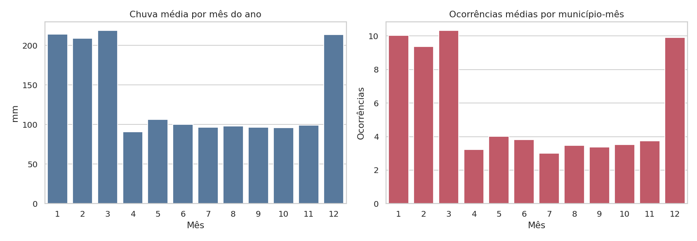
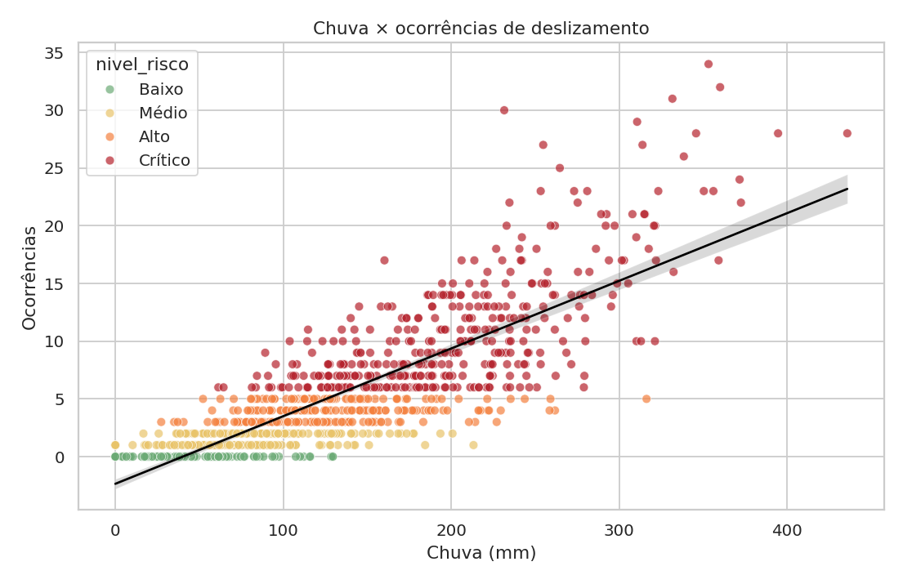
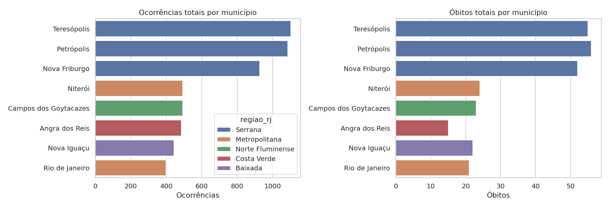
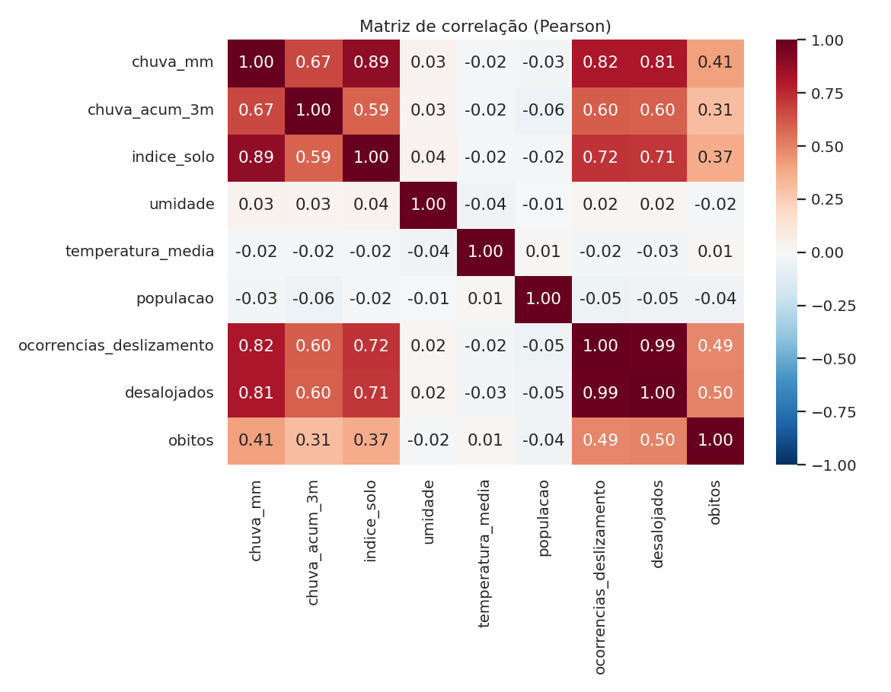
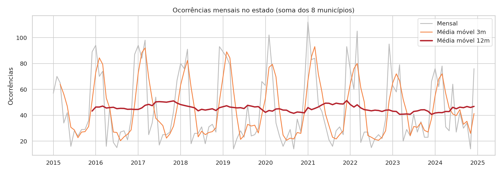

O problema
Encostas ocupadas e chuvas intensas formam uma combinação recorrente e letal no Rio de Janeiro. Este projeto transforma dados mensais de clima, solo e impacto em indicadores e gráficos que ajudam a priorizar prevenção.
Indicadores principais
5.426ocorrências de deslizamento
54,4 milpessoas desalojadas
268óbitos
0,82correlação chuva × ocorrências
58%das ocorrências em dez–mar
57%das ocorrências na Região Serrana
O que os dados mostram





Conclusão
- Chuva intensa + solo saturado + Região Serrana formam o padrão de maior risco.
- O nível 'Crítico' responde por cerca de 78% dos óbitos, mostrando que a classificação de risco é coerente.
- Recomendação: antecipar alertas e preparo para novembro–dezembro, priorizando Petrópolis, Teresópolis e Nova Friburgo.
Tecnologias e funcionalidades
PythonPandasMatplotlibSeabornStreamlitPlotlySQLAlchemy + SQLiteGitHub Pages
Funcionalidades avançadas: persistência em banco, mapa interativo, séries temporais com médias móveis e correlação estatística.